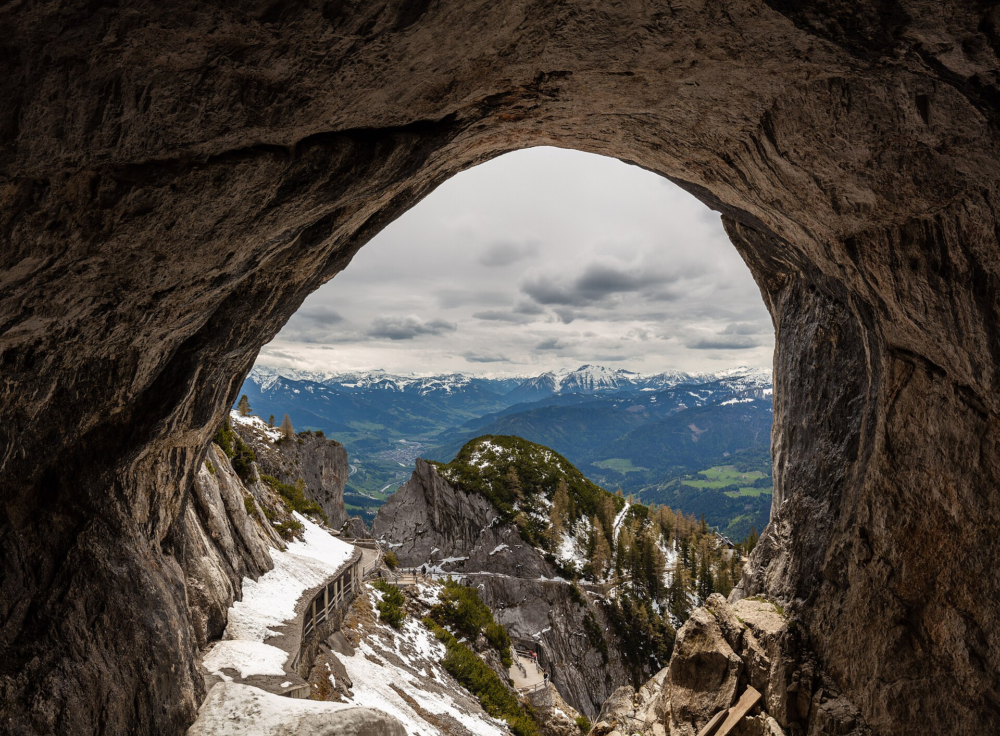
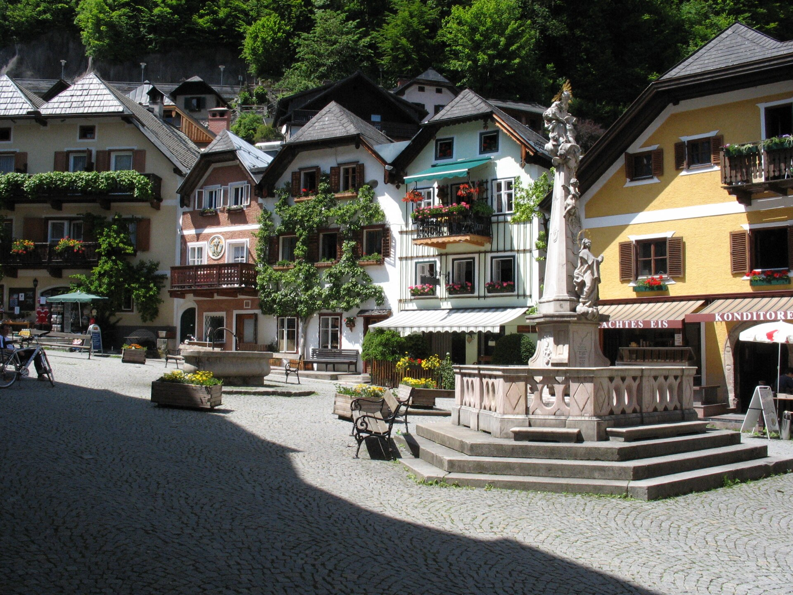

1Áttekintés
Miért október 24–29.? Az őszi szünet okt. 23. – nov. 1., de a szünet két vége csapda. Okt. 23. magyar ünnep → nyugatra csúcsforgalom. Okt. 31. – nov. 1. pedig Allerheiligen és a bajor őszi szünet kezdete (nov. 2–6.) → tömeg, zárt üzletek. A köztes okt. 24–29. ablak a legüresebb szezon, amit ez a szünet kínál.
| Mit | Részletek | Státusz |
|---|---|---|
| Szállás 1. | Premier Inn München City Ost — okt. 24–25. | ✔ megvan |
| Szállás 2. | Motel One Salzburg-Süd — okt. 25–29. (2 szoba) | ✔ megvan |
| Baráti nap | okt. 25. (vasárnap), München | ☐ egyeztetendő |
| Sóbánya | Salzbergwerk Berchtesgaden — okt. 27. | ☐ opcionális |
| Umweltplakette | zöld plakett a szélvédőre — postai átfutás ~2 hét | ☐ megrendelendő |
2A két szállás
München — Premier Inn München City Ost (okt. 24–25.)
Kronstadter Straße 6-8, Bogenhausen. Standard 4 ágyas szoba, 34 m² —
2 egyszemélyes + 1 franciaágy, mind a 4 fő egy szobában. 128 € (reggeli nélkül), reggelivel 164 €.
S-Bahn (Berg am Laim) 1,5 km.
Kelet-München: az A8-ról érkezve nem kell átvágni a városon, és másnap Salzburg felé is
innen indulsz. A baráti nap programjai (BMW Welt, Englischer Garten) viszont az északi oldalon vannak.
📍 Térkép
Booking
Salzburg — Motel One Salzburg-Süd (okt. 25–29.)
Alpenstraße 92-94, Salzburg-Süd. 8,6 pont (5 628 értékelés).
Standard szoba 17 m², max. 2 fő → két szoba. 2 × 418 € = 837 € négy éjre
(reggeli nélkül); reggelivel 2 × 562 €, vagy a helyszínen 17,90 €/fő/nap.
Magánparkoló a szállodánál, fizetős.
Nem gyalogtáv az óváros: a belváros 10–15 perc trolival, megálló az épület előtt.
📍 Térkép
Booking
3A terv logikája
Miért csak egy éj München?
Mert a baráti nap vasárnapra van kötve, és a barát Münchenben van. Így a müncheni éj az érkezés estéje, a vasárnap a baráté, és vasárnap este átköltözünk Salzburgba — 143 km, másfél óra. A hazaút pedig Salzburgból 545 km, nem Münchenből 653.
Salzburg mint bázis
Négy éj egy helyen, egy kipakolás. A sóbánya innen 27 km, a Königssee 31, Werfen 44, Hallstatt 73. Amiért Münchenbe mentünk volna, az nagyrészt pótolható — Neuschwanstein viszont nem, az 222 km egy irányba. Ez a váltás ára, és tudatos.
A nap hossza a fő korlát
Okt. 24/25. éjjel óraátállítás — utána Salzburgban ~17:00-kor sötétedik. Minden szabadtéri program délelőtt és kora délután. Ez nem stílus, ez a nap hossza.
1Útvonal
Menetidők: a fő szám a reális menetidő (4 fős család, 2–3 megállóval); zárójelben az ideális, megállás nélküli érték.
2Odafelé — Budapest → München
Október 24., szombatÁTUTAZÁS
- Végig autópálya, nincs hegyi szakasz, nincs külön fizetős alagút.
- Osztrák kamionstop szombat 15:00-tól — a délutáni szakasz üres.
- Kell: magyar e-matrica (M1) + osztrák 10 napos vignetta.
3Transzfer — München → Salzburg
Október 25., vasárnapRÖVID ETAP
- Ugyanaz az A8, amin előző nap jöttünk. ~17:00 indulás → ~19:00 becsekkolás.
4Visszafelé — Salzburg → Budapest
Október 29., csütörtökHAZAÚT
- Végig autópálya, ugyanaz a korridor, amin kifelé mentünk — csak Münchent hagyjuk ki a végéről.
- Nem kell másnap iskolába: a szünet nov. 1-ig tart, tehát három nap marad itthon kifújni magát (okt. 30., 31., nov. 1.).
- Nincs értelmes alternatív útvonal. A Graz-korridor Budapest felé kerülő, a Wien-korridor végig autópálya és a vignetta fedi.
1Napi program
Budapest → MünchenÁTUTAZÁS
- Reggel indulás — minél korábban. A 680 km egy teljes nap, ne tervezz mellé programot. Osztrák kamionstop szombat 15:00-tól — a délután üres
- Ebéd útközben — osztrák Raststation vagy Linz környéke. Itthonról bepakolt szendvics 30-40 €-t megfog
 Kora este érkezés, becsekkolás, vacsora a szállás közelében. Szállás: keleti/délkeleti München, saját parkolóval
Kora este érkezés, becsekkolás, vacsora a szállás közelében. Szállás: keleti/délkeleti München, saját parkolóval
Baráti nap Münchenben → SalzburgTRANSZFER
 BMW Welt — ingyenes, látványos, 11 és 13 évesnél biztos találat. Ha közös program kell a baráttal, ez a legolcsóbb jó ötlet. U-Bahn: Olympiazentrum · saját mélygarázs, fizetős📍 Térkép
BMW Welt — ingyenes, látványos, 11 és 13 évesnél biztos találat. Ha közös program kell a baráttal, ez a legolcsóbb jó ötlet. U-Bahn: Olympiazentrum · saját mélygarázs, fizetős📍 Térkép Englischer Garten + Eisbach-szörfösök — ingyenes, és októberben is mennek. Séta, aztán sörkert.📍 Térkép
Englischer Garten + Eisbach-szörfösök — ingyenes, és októberben is mennek. Séta, aztán sörkert.📍 Térkép- Fizetős alternatívák: Tierpark Hellabrunn (~50 €) vagy Olympiaturm (~40 €), ha a barát azt szeretné. ⚠️ Vasárnap Németországban az üzletek zárva — bevásárolni szombat este
- ~17:00 indulás Salzburgba — 143 km, ~2 óra. ~19:00 becsekkolás, vacsora Salzburgban📍 Útvonal
Salzburg óváros + Festung
 Festung Hohensalzburg — a vár 9:30–17:00, a FestungsBahn sikló októberben 9:00–20:30. Jegy: 14,50 € (alap + sikló) vagy 18 € (all-inclusive: múzeumok + audio guide). 6 év alatt ingyen, 6–14 között kedvezményes. 4 főre ~50–60 € · a várnál nincs parkoló, a sikló alsó állomásához menj📍 Térkép
Festung Hohensalzburg — a vár 9:30–17:00, a FestungsBahn sikló októberben 9:00–20:30. Jegy: 14,50 € (alap + sikló) vagy 18 € (all-inclusive: múzeumok + audio guide). 6 év alatt ingyen, 6–14 között kedvezményes. 4 főre ~50–60 € · a várnál nincs parkoló, a sikló alsó állomásához menj📍 Térkép Getreidegasse, Dóm, Residenzplatz — Mozart szülőháza kívülről is látvány. Ingyenes séta, a cégérek miatt a Getreidegasse önmagában látnivaló.📍 Térkép
Getreidegasse, Dóm, Residenzplatz — Mozart szülőháza kívülről is látvány. Ingyenes séta, a cégérek miatt a Getreidegasse önmagában látnivaló.📍 Térkép Mirabell-kert — ingyenes, és itt van a Sound of Music-lépcső. Októberben a kert még rendezett.📍 Térkép
Mirabell-kert — ingyenes, és itt van a Sound of Music-lépcső. Októberben a kert még rendezett.📍 Térkép- Ebéd: Augustiner Bräustübl (Mülln) — hatalmas, önkiszolgáló sörház saját sörfőzdével. Magad viszed a korsót és a kaját, a gyerekeknek külön élmény. Alternatíva: Sternbräu a belvárosban, gyerekbarát menüvel📍 Térkép
Sóbánya + Königssee
 Salzbergwerk Berchtesgaden — Salzburgtól 27 km / 35 perc. Nyári rend nov. 8-ig: 9:00–17:00. Csak vezetett túra, ~1 óra, de védőruha fel/le → számolj 2 órával. Beltéri, bányavasút és csúszda. Családi jegy 59 € + 8 € a 2. gyerekért = 67 € · saját parkoló📍 Térkép
Salzbergwerk Berchtesgaden — Salzburgtól 27 km / 35 perc. Nyári rend nov. 8-ig: 9:00–17:00. Csak vezetett túra, ~1 óra, de védőruha fel/le → számolj 2 órával. Beltéri, bányavasút és csúszda. Családi jegy 59 € + 8 € a 2. gyerekért = 67 € · saját parkoló📍 Térkép Königssee — a sóbányától 10 perc, Salzburgtól 31 km. ⚠️ A hajómenetrendet indulás előtt ellenőrizd: a Salet-járat október közepéig megy, a St. Bartholomä-járat télen is, de ritkábban. +49 8652 9636-0 · ha nem megy a hajó, a Malerwinkel-séta akkor is megvan📍 Térkép
Königssee — a sóbányától 10 perc, Salzburgtól 31 km. ⚠️ A hajómenetrendet indulás előtt ellenőrizd: a Salet-járat október közepéig megy, a St. Bartholomä-járat télen is, de ritkábban. +49 8652 9636-0 · ha nem megy a hajó, a Malerwinkel-séta akkor is megvan📍 Térkép
Választható napIDŐJÁRÁSFÜGGŐ

A) Eisriesenwelt, Werfen — 44 km / 41 perc. A világ legnagyobb jégbarlangja. A szezon nov. 1-jén zár, tehát még megy. Pénztár 8:30–15:00, barlangtúra 9:30–15:45. 1641 m, felvonó + sok lépcső, a barlangban fagypont körül van. Sapka, kesztyű, jó cipő — ez nem opcionális📍 Térkép
B) Hallstatt — 73 km / 1 ó 16. Világörökség, tóparti falu. Október végén már csendes, ami itt kifejezetten előny. P1–P2 a falun kívül, fizetős. Autóval ne menj be a faluba.📍 Térkép- C) Hellbrunn Wasserspiele — 5 km. A szezon nov. 1-jén zár. 9:30–17:30, utolsó belépő 16:30. A vízijátékok ennek a korosztálynak is működnek.📍 Térkép
- Esős terv: Haus der Natur (Museumsplatz 5) — naponta 9:00–17:00, utolsó belépő 16:30. Science center, akvárium, dinók, 7000 m². Családi jegy (2 felnőtt + 2 gyerek): 48 €📍 Térkép
Ha derült és fagymentes: Eisriesenwelt. Ha borús: Hallstatt. Ha esik: Haus der Natur.
Salzburg → BudapestHAZAÚT
- Reggel, ha van kedv: Mirabell-kert vagy Hellbrunn kicsekkolás előtt. Nem kötelező — ez hazaindulós nap.
- 09:00 kicsekkolás → 545 km ~5 ó 35 vezetés + megállók📍 Térkép
~15:30–16:00 Budapest. A szünetből még három nap marad itthon (okt. 30., 31., nov. 1.).
1Látnivalók összefoglalója
A nevek kattinthatók — a hivatalos oldalra visznek (nyitvatartás, jegy), a 📍 pedig a térképre.
| Látnivaló | Nap | Nyitva | Belépő (4 fő) | Megjegyzés |
|---|---|---|---|---|
| BMW Welt 📍 | 2. | naponta | ingyenes | Baráti nap opció |
| Festung Hohensalzburg 📍 | 3. | 9:30–17:00 | ~50–60 € | Sikló okt. 9:00–20:30 |
| Salzburg óváros, Mirabell 📍 | 3. | — | ingyenes | Getreidegasse, Dóm |
| Salzbergwerk Berchtesgaden 📍 | 4. | 9:00–17:00 | 67 € | Nyári rend nov. 8-ig |
| Königssee 📍 | 4. | hajó: ellenőrizni | ~60–70 € (becslés) | Késő őszi menetrend ritkább |
| Eisriesenwelt 📍 | 5. | 9:30–15:45, nov. 1-ig | ár ellenőrzendő | Fagypont a barlangban |
| Hallstatt 📍 | 5. | — | ingyenes (parkolás nem) | 73 km, tóparti falu |
| Hellbrunn Wasserspiele 📍 | 5. | 9:30–17:30, nov. 1-ig | ár ellenőrzendő | Utolsó belépő 16:30 |
| Haus der Natur 📍 | 5. | 9:00–17:00 | 48 € családi | Esős terv, science center |
2Amit tudatosan kihagytunk
Neuschwanstein
Salzburgi bázisról 222 km / 3 óra egy irányba. Idősávos jeggyel, októberi napfénnyel ez egy teljes nap vezetéssel. Ez a Salzburg-váltás ára, és tudatos.
Deutsches Museum, BMW Museum
Müncheni programok, és Münchenre egy éj jut — az is a baráté. A BMW Welt viszont ingyenes, az belefér.
Partnachklamm
90 km Münchentől, 180 Salzburgtól. Salzburgi bázisról értelmetlen.
Salzwelten Hallein
Közelebb van (19 km), mint Berchtesgaden, de 4 főre ~102 € a berchtesgadeni 67 € helyett. Ugyanaz az élmény, drágábban.
Zugspitze, Legoland
230 € egy kilátásért, ami okt. végén többször felhőben van, mint nem — illetve 300 km és egy teljes nap egy felemás élményért.
3Képek
1Költségkalkuláció
4 fő, 5 éjszaka (1 München + 4 Salzburg), saját autó. A szállás már fix, a többi becslés.
Szállás
| Tétel | Reggeli nélkül | Reggelivel |
|---|---|---|
| Premier Inn München City Ost, 1 éj | 128 € | 164 € |
| Motel One Salzburg-Süd, 4 éj, 2 szoba | 837 € | 1 124 € |
| Összesen | 965 € | 1 288 € |
A különbség kizárólag a reggeli: Salzburgban 17,90 €/fő/nap, ami 4 főre ~72 €/nap — négy napra ~287 €. A Motel One-nal jól jöttél ki: 837 € négy éjre két szobával ~209 €/éj, a salzburgi apartmanok 250–290 €/éjszakás szintje helyett.
Közlekedés
Alapfeltevés: ~1 670 km összesen (680 oda + 143 transzfer + 545 haza + ~300 helyi). PHEV, autópályán benzinnel, 7–8 l/100 km — a 7 az alsó becslés, nem az átlag.
| Tétel | Becslés |
|---|---|
| Üzemanyag (~117–134 l, DE/AT/HU vegyes ár) | 205–240 € |
| Osztrák 10 napos vignetta | ~13 € |
| Magyar e-matrica D1, havi (M1, oda és vissza) | ~14 € |
| Német Umweltplakette (egyszeri, zöld) | 6–15 € |
| Parkolás (Motel One 4 éj + München + óváros) | 50–100 € |
| Összesen | ~290–380 € |
A hazaút végig a Wien-korridoron megy, tehát nincs külön fizetős alagút, és a magyar szakaszra ugyanaz a havi e-matrica jó, mint odafelé. Ha a salzburgi szálláson tudsz tölteni, a helyi napok benzinköltsége lejjebb megy.
Étkezés
| Tétel | Alsó | Felső |
|---|---|---|
| 6 nap, 4 fő (reggeli a szálláson, ebéd/vacsora kint) | 540 € | 780 € |
Programok és belépők
| Tétel | Összeg |
|---|---|
| Festung Hohensalzburg (sikló + múzeumok) | ~50–60 € |
| Salzbergwerk Berchtesgaden | 67 € |
| Königssee hajó (ha megy) | ~60–70 € |
| 5. napi program (Eisriesenwelt / Hallstatt / Hellbrunn / Haus der Natur) | 0–80 € |
| BMW Welt | ingyenes |
| Összesen | ~180–280 € |
Teljes becsült költség
| Alsó | Felső | |
|---|---|---|
| Szállás (München 1 éj + Salzburg 4 éj, 2 szoba) | 965 € | 1 288 € |
| Közlekedés | 290 € | 380 € |
| Étkezés | 540 € | 780 € |
| Programok | 180 € | 280 € |
| Összesen | ~1 975 € | ~2 730 € |
1Umweltzone München
- A Mittlerer Ringen belül 2023. február 1-től csak zöld plakettel lehet behajtani.
- A külföldi autókra is vonatkozik — magyar rendszám nem kivétel.
- A hibrid nem mentesít — belsőégésű motor van benne, tehát ki kell tenni.
- A benzines PHEV Euro 6, tehát zöld plakett jár rá. Postai rendelés ~2 hét, 6–15 €.
- Egy éjszakára is kell, ha a baráti nap a belvárosba visz.
2Salzburg Card
A város kártyája (24/48/72 óra) tartalmazza a FestungsBahnt, a Haus der Naturt, a Hellbrunnt és a tömegközlekedést. Három salzburgi napra nézd meg, kijön-e — az aktuális ár a salzburg.info oldalon van. A kalkulációban nem számolok vele.
3Óraátállítás és a nap hossza
- Okt. 24/25. éjjel áll át az óra (október utolsó vasárnapja) → +1 óra alvás.
- Utána Salzburgban ~17:00 körül van napnyugta.
- Minden szabadtéri program délelőtt és kora délután. Ez nem stílus, ez a nap hossza.
4Téli gumi
- Ausztria: nov. 1. – ápr. 15. között kötelező téli körülmények közt. Okt. 29-én elhagyjuk Ausztriát, tehát ránk még nem áll — de négy napot töltünk ott, és az Eisriesenwelt 1641 m-en van.
- Németország: szituatív — havas/jeges úton M+S kötelező, dátum nélkül.
- Nézd meg a gumikat indulás előtt.
5Vasárnapi zárvatartás
Németországban és Ausztriában vasárnap az üzletek zárva. A 2. nap (okt. 25.) baráti nap Münchenben — ha kell bevásárolni, szombat este tedd, vagy hétfőn Salzburgban.
6Csúcsidő, amit elkerülünk
- Okt. 23. (péntek): magyar ünnep, nyugatra csúcsforgalom.
- Okt. 31. (szombat): indul a német utazási hullám.
- Nov. 1. (vasárnap): Allerheiligen — munkaszüneti nap Bajorországban és Ausztriában. Ezen a napon zár az Eisriesenwelt és a Hellbrunn is.
- Nov. 2–6.: bajor őszi szünet — mi már otthon vagyunk.
7Étterem-ajánlások
Csak olyan helyek, amik biztosan léteznek és intézmények. Az árakat és a nyitvatartást indulás előtt ellenőrizd. Nagyobb sörházba 4 főre este foglalj asztalt.
Salzburg
Augustiner Bräustübl (Mülln) — önkiszolgáló sörház saját sörfőzdével, külön kategória. Sternbräu — belvárosi, tágas, gyerekbarát menü. Zum Fidelen Affen — kisebb, helyi, este asztalfoglalás kell.
München
Hofbräuhaus — a turistaklasszikus, egyszer megéri. Augustiner-Keller — helyiek is járnak. Viktualienmarkt standjai — ebédre a legjobb ár-érték.
Autópálya
Az osztrák Raststation-ök tiszták és korrektek, de drágák. 4 főre az itthonról bepakolt szendvics 30-40 €-t megfog az első napon.
8Parkolás és navigáció
| Helyszín | Parkolás |
|---|---|
| Motel One Salzburg-Süd | Magánparkoló a szállodánál, fizetős — az árat kérdezd meg. |
| Premier Inn München City Ost | Van parkolás a szállodánál — a díját a Booking nem írja ki. |
| Salzburg óváros | Altstadtgarage Mönchsberg (a hegy alatt), onnan gyalog a centrum. |
| Festung Hohensalzburg | A várnál nincs parkoló — a sikló alsó állomásához menj, vagy gyalog fel. |
| Salzbergwerk | Saját nagy parkoló a bejáratnál. |
| Königssee | Schönau am Königssee, fizetős parkolók a tóparti sétány előtt. |
| Eisriesenwelt | Werfen, alsó parkoló, onnan busz + felvonó. |
| Hallstatt | P1–P2 a falun kívül, fizetős. Autóval ne menj be a faluba. |
| München (1 éj) | A szállás saját parkolója — ezért szempont a foglalásnál. |
⚠️ Münchenben ellenőrizd az Umweltzone határát — a Mittlerer Ring a vonal.
1Csomagolási lista
Okt. végi Salzburg + Alpok: 5–12 °C, eső reális, hegyen akár havazás. Az Eisriesenwelt barlangjában fagypont körül van — ez külön tétel.
Ruha
- Réteges: pulóver + vízálló kabát mind a 4 főnek
- Sapka, sál, kesztyű — a jégbarlanghoz és a Königssee-hez nem luxus
- Kényelmes, vízálló cipő — a Festung, a barlang és Hallstatt is köves-lépcsős
- Egy alkalmi szett vacsorához · esernyő (kicsi, kettő)
Autó
- Töltőkábel (PHEV), telefontartó, töltők, autós adapter
- Ablakmosó, jégkaparó (okt. végi Alpok)
- Elsősegély, láthatósági mellény (osztrák előírás), elakadásjelző
- Szendvics + ital az első napra
Dokumentum
- Személyi/útlevél mind a 4 főnek
- EU-kártya (EHIC) mind a 4 főnek
- Forgalmi, jogosítvány, zöldkártya, utasbiztosítás kötvényszáma
- Foglalási visszaigazolások offline is (PDF a telefonon)
Gyerekeknek a hosszú etapokra
- Letöltött film/sorozat, fejhallgató
- Könyv, kártya, powerbank
1Most, ezen a héten
- Kérdezd meg a Motel One parkolási díját — a Booking nem írja ki, és négy éjre számít
- Kérj szomszédos szobát a Motel One-nál a foglalás megjegyzésében — a gyerekek külön szobában alszanak
- Szólj a barátodnak — pinneld le okt. 25-öt (vasárnap), amíg szabad
- Zöld Umweltplakette megrendelése — postai átfutás ~2 hét
Kattints egy sorra a kipipálásához — a böngésző megjegyzi.
2Október elején
- Osztrák digitális vignetta, 10 napos (~13 €). ⚠️ Online vásárlásnál az érvényesség késhet (elállási jog), ha nem mondasz le róla kifejezetten. Vagy vedd meg jó előre, vagy egy benzinkúton a határ előtt.
- Magyar e-matrica D1, havi (~5 500 Ft) — az M1-hez mindkét irányban kell
- Königssee hajómenetrend — késő őszi rend: +49 8652 9636-0
- Téli gumi ellenőrzése
- Salzburg Card — számold ki, kijön-e a három napra
3Indulás előtti héten
- Okt. 26–28.: időjárás-előrejelzés → dönts az 5. napról (Eisriesenwelt / Hallstatt / beltér)
- Eisriesenwelt — nyitva van-e, és milyen az idő Werfenben
- Salzbergwerk — csúcsidőn kívül a helyszíni jegy általában megy, de ha fix 10:00-t akarsz, foglalj
- Dokumentumok: gyerekek okmányai, EU-kártya mind a 4 főnek, utasbiztosítás, forgalmi + zöldkártya
- PHEV: töltőkábel bepakolása, szállás konnektor-lehetőségének egyeztetése